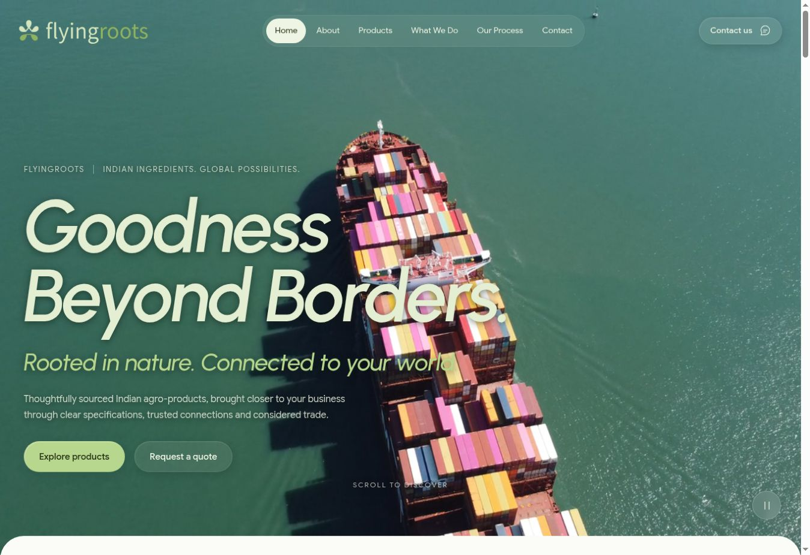

Make discovery useful
Let visitors explore seven ingredient categories with search, filters and detail views.
A responsive agro-food trade website concept with an interactive seven-category catalogue and two enquiry journeys.
FlyingRoots imagines how an Indian agro-food trading brand could explain its sourcing approach and help buyers and suppliers find a useful starting point. It is a portfolio concept, not an operating company.
A broad ingredient offering can feel like an undifferentiated list. The concept explores how buyers and suppliers might find relevant information and enter distinct enquiry journeys. The business and its contacts are fictional.
Let visitors explore seven ingredient categories with search, filters and detail views.
Give prospective buyers and suppliers different forms and relevant fields.
Balance a cinematic introduction with fast access to the catalogue and process.
The site introduces the brand, then moves into category discovery, product details, process context and two audience-specific entry points. Interactions run locally in the browser.
Browse products, formats and details before preparing an enquiry preview.
Understand the sourcing story and prepare their own enquiry preview.
Implemented local browsing and enquiry-preview behavior; no live submission.
The live site uses a full-screen film, generous editorial type and agricultural imagery. The editorial cover is conceptual; the paired screenshot shows the actual hosted page.

These are design intentions. No measured outcome is implied.
Combine categories, search and a detail drawer
Different visitors need different levels of specificity
More direct exploration
Provide separate buyer and supplier enquiry paths
One generic form would ask irrelevant questions
A more relevant local preview
Use restrained motion and clear content sections
Movement should support orientation
A readable experience across screen sizes
I developed the responsive visual direction and frontend experience in HTML, CSS and JavaScript. The form previews validate and display input locally; they do not send or save enquiries.
The concept website is live on GitHub Pages. Its displayed company and contact details are fictional; enquiries are local previews, with no backend or commercial outcome claimed.
A real business version would require verified company details, a secure enquiry service and testing with actual buyers and suppliers.